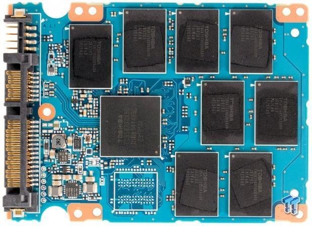

Week 2, Tuesday: Representation—Technical and Social
What does it mean to be represented?
This question sits at the heart of computer science in two surprising ways. Today we’re going on a journey—from the cultural richness of colour, down to the electrical signals inside your computer, and back up to some big questions about who gets to shape the technology we all use.
Ready? Let’s go.
The Cultural Richness of Colour
Before we dive into bits and bytes, let’s start with something personal: What’s your favorite colour?
No, really—take a moment to think about it. Is it blue, like the ocean on a clear day? Red, like the poppies that bloom in spring? Green, like the forests that cool our cities?
Do you know why it’s your favorite? Does it show up in your wardrobe, your room decor, the things you’re drawn to when you shop?
Colour is weird. It’s deeply personal, but it’s also culturally loaded in ways we don’t always notice:
- Red means luck and celebration in Chinese culture… but danger and warning in Western contexts. Same colour, totally different vibes!
- White symbolizes purity and weddings in many Western traditions… but mourning and funerals in some Eastern cultures. Imagine the confusion at an international wedding!
- Purple was once the colour of royalty (because the dye was ridiculously expensive)… but has taken on completely different meanings today.
These associations aren’t random—they’re woven into centuries of art, literature, religion, and daily life. Colour carries meaning.
So here’s the question that should blow your mind a little: How do we take something this rich and nuanced and make a computer understand it?
How Computers “See†Colour
Spoiler alert: they don’t. Not really. But we’ve found a clever workaround.
It All Starts with Electricity
Let’s go all the way down to the bottom. Inside your computer, everything—and I mean everything—comes down to electrical charges.

See those chips? They’re full of tiny transistors holding or releasing electrons, creating regions of positive and negative charge. Your computer interprets these charges as bits: binary digits that can be either 0 or 1.
That’s it. Just two states. On or off. Yes or no. One or zero.
Is that really enough to represent… everything? 🤔
From Bits to Numbers (It’s Just Counting!)
Here’s where it gets fun. You already know how to count in base 10:
| 3 | 1 | 5 | 7 |
|---|---|---|---|
| 3 × 10³ | 1 × 10² | 5 × 10¹ | 7 × 10Ⱐ|
| 3000 | 100 | 50 | 7 |
The number 3157 is just: three thousands, one hundred, five tens, and seven ones.
Now here’s the trick—we can do exactly the same thing in base 2:
| 1 | 0 | 1 | 1 |
|---|---|---|---|
| 1 × 2³ | 0 × 2² | 1 × 2¹ | 1 × 2Ⱐ|
| 8 | 0 | 2 | 1 |
So 1011 in binary = 8 + 0 + 2 + 1 = 11 in decimal.
Pop quiz! 🎯
- What’s the highest number you can make with 4 bits?
- What about 5 bits?
(Think about it before scrolling…)
With 4 bits: 1111 = 8+4+2+1 = 15 (that’s \(2^4 - 1\), or 16 possible values: 0 through 15)
With 5 bits: 11111 = 31 (that’s \(2^5 - 1\), or 32 possible values)
In general, \(n\) bits gives you \(2^n\) different values. Math is cool. 😎
From Numbers to Colours: RGB
Okay, so we can represent numbers with bits. But how do we get from numbers to colours?
We just… agree on a system! The most common one is RGB: Red, Green, Blue.
Each colour component gets a number from 0 to 255. (Why 255? Because that’s exactly \(2^8 - 1\)—the range of an 8-bit number. Everything connects!)
Check it out:
(255, 0, 0)= pure red (max red, no green, no blue)(0, 255, 0)= pure green(0, 0, 255)= pure blue(255, 255, 0)= yellow (red + green, no blue—try it!)(255, 0, 127)= a lovely pink
By mixing different amounts of red, green, and blue light, we can create…
$256 = $ 16,777,216 different colours! 🌈
That’s more colours than most humans can distinguish. Not bad for a bunch of 1s and 0s!
Hexadecimal: Because Programmers Are Lazy (In a Good Way)
Writing (103, 78, 167) every time you want a specific purple is tedious. And writing the binary version?
0110 0111 0100 1110 1010 0111Ugh. Nobody wants that.
Enter hexadecimal (base 16). Instead of 10 digits, we use 16: 0 1 2 3 4 5 6 7 8 9 a b c d e f
The magic: each hex digit represents exactly 4 bits. So we can write any colour in just 6 characters:
0110 0111 0100 1110 1010 0111 (binary - 24 digits 😫)
6 7 4 e a 7 (hex - 6 characters 😊)Which we write as: #674ea7
You’ve probably seen hex codes in web design, CSS, or design tools. Now you know what they actually mean!
🨠Want to play? Check out https://colorizer.org and try converting between RGB and hex. It’s weirdly satisfying.
Stop and Feel Two Things
At this point, I want you to notice something. You might be feeling:
Wonder ✨ — It’s genuinely amazing that we can represent 16 million colours using just 1s and 0s! The layered abstraction—from electrons to bits to numbers to colours—is kind of beautiful.
Unease 😕 — Something feels lost. All that cultural richness, the personal associations, the emotional weight of colour… none of it survives in
(255, 0, 127).
Both feelings are valid! This tension is at the heart of all digital representation: to make something computational, we have to reduce it.
Keep that thought. We’re going to need it.
The Plot Twist: A Second Meaning of “Representation”
Look at these six colours:
| R | G | B |
|---|---|---|
| 255 | 0 | 0 |
| 17 | 0 | 178 |
| 45 | 0 | 13 |
| 200 | 0 | 220 |
| 62 | 0 | 37 |
| 130 | 0 | 95 |
Notice anything? 👀
They all have green = 0.
These are all in the purple/magenta family—mixes of red and blue with zero green.
Now imagine an RGB colour cube—a 3D box where each axis represents one colour channel (0 to 255). Every possible colour lives somewhere in that cube!

Try it yourself! Drag to rotate the cube and explore the colour space:
When green = 0, we’re stuck on just one face of this cube. A flat plane. We can never create:
- The green of spring leaves
- The teal of tropical waters
- The yellow of sunflowers
- Anything that needs even a hint of green
An entire dimension just… doesn’t exist. 😱
Here’s Where It Gets Real
This is more than a fun fact about colour spaces. It’s a metaphor.
Just as removing the green channel limits the colours we can create, limiting the diversity of people in computer science limits the ideas we can explore.
Think about it:
- When everyone on a team has similar backgrounds and experiences, they’ve effectively removed dimensions from the “idea space”
- They build solutions that work great for people like them… and poorly for everyone else
- They don’t see problems that don’t affect them personally
- They perpetuate biases they don’t even know they have
This isn’t about being “nice†or “politically correct.†It’s about technical excellence. The best solutions come from teams that can see problems from multiple angles.
Representation matters—in both senses of the word.
Let’s Write Some Code!
Enough philosophy—let’s actually use what we’ve learned. Here’s a fun challenge:
Make the poppies pop! 🌺

The plan: 1. Look at each pixel 2. If it’s very red (probably a poppy!), leave it alone 3. Otherwise, convert it to gray
Simple, right? Let’s code it!
The Code
💡 Copy this code (click the icon in the top-right corner) and paste it into your own Python environment to run it!
import numpy as np
from skimage import io
import matplotlib.pyplot as plt
Pixel = tuple[np.uint8, np.uint8, np.uint8] # (r, g, b)
def boost_red_pixel(p: Pixel) -> Pixel:
"""Make non-red pixels gray, keep red pixels vibrant."""
red = int(p[0])
green = int(p[1])
blue = int(p[2])
# Calculate gray value (average of all channels)
grey = (red + green + blue) // 3
# If not very red, make it gray
if red < 200:
red = green = blue = grey
return (red, green, blue)
def fancify(img: np.ndarray) -> np.ndarray:
"""Apply our effect to every pixel in the image."""
H, W = img.shape[:2] # Height and Width
out = img.copy()
# Visit every single pixel (this is the nested loop pattern!)
for row in range(H):
for col in range(W):
out[row, col] = boost_red_pixel(img[row, col])
return out
def main():
# Grab the image from the web
url = 'https://raw.githubusercontent.com/UBC-CS/cpsc203/refs/heads/main/images/poppyfield.jpg'
img = io.imread(url)[..., :3] # Keep only RGB channels
# Work our magic
out = fancify(img)
# Show off the result!
plt.imshow(out)
plt.axis('off')
plt.show()
main()What’s Actually Happening?
The nested loop is the key pattern here. We’re visiting every pixel in order:
┌─────┬─────┬─────┬─────┐
│ 1 │ 2 │ 3 │ 4 │ ↠row 0
├─────┼─────┼─────┼─────┤
│ 5 │ 6 │ 7 │ 8 │ ↠row 1
├─────┼─────┼─────┼─────┤
│ 9 │ 10 │ 11 │ 12 │ ↠row 2
└─────┴─────┴─────┴─────┘Row by row, column by column. For a 400×600 image, that’s \(400 \times 600 = 240{,}000\) pixels!
(Remember Week 1? This is \(O(n^2)\) behavior. Efficiency matters!)
Your Turn! 🎮
Try these experiments:
- Boost green instead — What threshold works well for leaves?
- Change the threshold — Try 150 or 250 instead of 200
- Invert instead of gray — Use
red = 255 - redfor a trippy negative effect - Reverse the logic — Keep the non-red pixels and gray out the red ones
The best way to understand this stuff? Play with it. Break things. See what happens. That’s how you build intuition!
What Did We Learn?
Let’s zoom out. Today’s journey:
Technical stuff: - Computers store everything as bits (1s and 0s) - Bits → numbers → colours (it’s abstractions all the way down!) - RGB gives us 16+ million colours - Hex is just a compact way to write RGB values
Big ideas: - Digital representation requires reduction—we lose richness - Missing dimensions limit what’s possible - Diversity in tech isn’t just nice—it’s technically necessary
Skills: - Binary and hexadecimal conversion - RGB colour representation - Nested loops for image processing - Breaking problems into functions
Coming Up
We’ve focused on what computers represent and why representation matters. Next time, we’ll dig into how we represent more complex data—and why different choices lead to different tradeoffs.
But for now: go play with colours! 🨠Find a hex code you love. Write some code that manipulates images in weird ways. Make something unexpected.
That’s where the real learning happens.
Diversion: The Geometry of Odd Numbers
Here’s a cute mathematical puzzle we explored in class. It turns out that adding odd numbers reveals beautiful geometric patterns!
Building Squares from Odd Numbers

Do you see the pattern? Each odd number forms an “L-shape†that wraps around the previous square to make the next bigger square!
1 + 3 + 5 + …
The sum of the first \(k\) odd numbers is \(k^2\).
How Many Terms? Finding k
But wait—if someone gives you \(1 + 3 + 5 + \ldots + 2381\), how do you know how many terms that is?

The k-th odd number is \(2k - 1\). So if the last term is \(2k - 1\), then:
\[k = \frac{\text{last} + 1}{2}\]
That’s why \(1 + 3 + 5 + \ldots + 1337 = 669^2 = 447561\). (Since \(k = (1337+1)/2 = 669\).)
Sums of Partial Sequences: Inclusion-Exclusion
What about \(11 + 13 + 15 + \ldots + 23\)?
Think geometrically! This is like taking a 12×12 square (sum of first 12 odds, ending at 23) and removing a 5×5 square (sum of first 5 odds, ending at 9):

The sum of odd numbers from \((2j+1)\) to \((2k-1)\) is \(k^2 - j^2\).
This is inclusion-exclusion in action: take the big square, subtract the small one!
What About Even Numbers?
Here’s a neat trick: every even number is just an odd number plus one! So we can regroup:
\[2 + 4 + \ldots + 24 = (1+1) + (3+1) + \ldots + (23+1)\]
\[= \underbrace{1 + 3 + \ldots + 23}_{12 \text{ odds}} + \underbrace{1 + 1 + \ldots + 1}_{12 \text{ ones}} = 12^2 + 12\]

In general, the sum of the first \(k\) evens = sum of the first \(k\) odds + \(k\):
\[2 + 4 + 6 + \ldots + 2k = k^2 + k = k(k+1)\]
For example: \(2 + 4 + 6 + \ldots + 1338 = 669 \times 670 = 448230\).
Why Does This Matter?
These patterns show up everywhere in computer science:
- Loop analysis: When you have nested loops, you’re often summing arithmetic sequences
- Algorithm complexity: Many \(O(n^2)\) algorithms have this structure hiding inside
- Geometric reasoning: Sometimes the fastest way to understand a formula is to draw it
Plus, it’s just satisfying when math has pictures! 🎨
Photo credit: Poppy field from Epic Gardening. SSD image from Ars Technica. RGB cube from Wikipedia.
{kind=link}